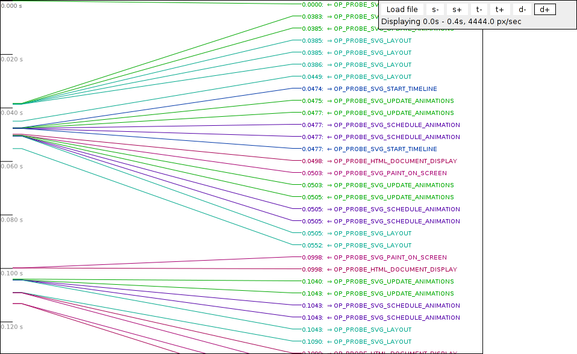

Probetools is a low granuality / low overhead runtime profiler, measuring performance across profiles and devices.
Probetools is also a simple tool to use when profiling is needed during developement.
Performance is measured by:
FEATURE_PROBETOOLS enables probetools.
(Edit modules/probetools/probepoint_enabling.h to adjust probe granuality.)
Probetools was originally developed before 2005, and originally contained both memory management, and a scope-like telnet server.
As of 2010 Q1/Q2 most of the probetools module has been rewritten and probetools is now only measuring performance through timing/counting.
Create a new probename: OP_PROBE_[MODULE]_[WHAT] (for example: OP_PROBE_UTIL_OP_FILE_ISOPEN)
Add this as a new line to the file module.probes in the module you want to add your probe.
If no such file exsist, create a new one, and copy the header comment from another modules module.probes (for example from util module)
This will add your new probe to the global probespace.
(It is possible to only run modules/probetools/scripts/preprocess_probes.py to generate the global probespace)
#include "modules/probetools/probepoints.h" //must be included in all files using probes
void FunctionWeWantToProbe(void){
OP_PROBE1(OP_PROBE_SOMEMODULE_SOMEDESCRIPTION);
...complicated stuff that we want to probe...
}
This will measure all of FunctionWeWantToProbe, and all it's subcalls.
It will also measure relations to calling probes and probes called from this code.
It will also measure the recursive nature of this function, even if the recursive path is indirect.
Notice that OP_PROBE1 is used.
OP_PROBE1, OP_PROBE2, OP_PROBE3, ... OP_PROBE9
are different probe-profiles expected to be used for different situations
NOTE: probe-profiles may be enabled/disabled independently from modules/probetools/probepoint_enabling.h (read: Probe profiles).
Place follow the following directions:
OP_PROBE0: Probes for Spartan. This includes probes for all messages. This includes probes of all core messages. Adding new level 0 probes can alter self time for existing probes, so it is good to check how probes are used on Spartan before adding new ones.
OP_PROBE1: Probes for startup.
OP_PROBE2: Common platform-sensitive low-level functionality like file I/O, sockets and paint events
Note: OP_PROBE0 and OP_PROBE1 should not exceed 1% overhead
OP_PROBE3: Module high level APIs to measure module interactions, for example to track who initializes REFLOWs
OP_PROBE4 - OP_PROBE6: High level module functions (module owner decides, 4 should call 5, should call 6)
OP_PROBE7 - OP_PROBE9: Low level probes for testing and developement. These probe profiles should not be enabled in mainline
NOTE: Probe profiles can be enabled or disabled from modules/probetools/probepoint_enabling.h
// some code...
{
// We are outside any probe.
{
OP_PROBE1(EXAMPLE_PROBE_1); //Here we put example probe 1 on the stack
// We are now "inside" example probe 1.
{ //This scope-jump could contain any stack of function calls.
OP_PROBE1(EXAMPLE_PROBE_2); //Here we put example probe 2 on the stack
// We are now "inside" example probe 2, which will be registered as a child probe to example probe 1.
// In this example example probe 1's child probe time will be the total time of example probe 2.
// Here example probe 2 will end its scope, so we go out of example probe 2.
}
// We are now back "inside" example probe 1 again.
// Here example probe 1 will end its scope, so we go out of it.
}
// Now we are outside any probe again.
}
// Probe overhead is the time used to create probe and put it on the stack, and the time used to delete probe, and to
// register measured time in the global probegraph.
Probe report is written to [OPFILE_TEMP_FOLDER]/probedata/probereport.txt.
The location of [OPFILE_TEMP_FOLDER] depends on the platform. For core-gogi this
is the folder 'opera'.
From the top:
Session length (incl idle): 36592.927 // The length of the full session in milliseconds.
Probe time (w/o oh): 22055.222 // Time spent inside probes.
Probe overhead: 174.653 // Overhead time added by probes.
Probe overhead%: 0.8% // Percentage of overhead while inside probes.
Idle (outside probes): 14363.053 // Either idle time, or code not covered by top probes.
Idle percentage: 39.3% // Percentage of full session that is idle.
Runtime overhead%: 0.5% // Percentage of full session that is overhead.
NOTE: Since not all opera runtime is covered with probes we separate the time measured by probes, and the time not measured.
Probe overhead is only generated when we are "inside" probes, so we calculate overhead percentage of the whole session and overhead percentage of time in probes.
Probes:
=====================
PROBES
=====================
--- T#------ Tt---------- Tt(avg)---- Tt(max)---- St--------- Ct--------- R#------ Rt--------- Ri--------- O---------- O(avg)----- LOC- PAR- LEV- NAME----
p-> 0 0,000 0,00000 0,00000 0,000 0,000 0 0,000 0,000 0,000 0,00000 1 0 -1 OP_PROBE_ROOT none
p-> 982 3920,661 3,99253 2902,59838 1895,017 2025,644 20 0,965 0,965 6,607 0,00673 24 191 0 OP_MSG:MSG_PLUGIN_CALL hardcore
p-> 18582 3681,947 0,19815 284,43608 3585,155 96,792 0 0,000 0,000 124,919 0,00672 24 293 0 OP_MSG:DELAYED_FLASH_MESSAGE hardcore
p-> 675 3636,180 5,38693 325,27961 3581,579 54,601 0 0,000 0,000 5,545 0,00821 24 135 0 OP_MSG:MSG_URL_DATA_LOADED hardcore
p-> 41 3409,983 83,17033 666,26802 2712,450 697,533 0 0,000 0,000 0,420 0,01025 24 104 0 OP_MSG:MSG_REFLOW_DOCUMENT hardcore
...
Each line descripes a probe:
From the example above we can read:
The rest of the report describes probes and edges, which you can read about under "Detailed description"
Copy the probereportviewer.html from modules/probetools/utils/, and put it next to the probereport.txt result file (it must have the exact name, and they must be placed in the same directory).
probereportviewer.html lets you browse the report file in a simpler way.
Probes and edges:
If we compare this block to the "probes" example, the line starting with p-> represent the probe also found under "probes",
the lines above p-> starting with e represents incoming edges, and the lines below p-> starting with e represent outgoing edges.
NOTE: edges do not describe any probe fully, only the relation between probes.
The relationship between a probe's measurements and an edge's measurements is that a probe's measurement is the sum of the measurements of all incoming edges. (This is ALWAYS true).
Because of this, a probe's child time is only registered on the edge connected directly to the child-probe when recursive (recursive self is not counted at child-time)
This means that even if an edge has indirect child probes, their time is only measured on the recursive edge connected directly to them.
Another difference between edge and probe measurement is the Rt & Ri measurements.
For clarity, recursion is only measured between identical probes (probes with the same name, and the same index_parameter).
Since recursion can only be initiated by the same probe, and since "recursive time" only can be spent by the probe initiating the recursion,
Ri & Rt will always be equal for a probe, but might be different for an edge.
=====================
PROBES AND EDGES
=====================
...
--- T#------ Tt---------- Tt(avg)---- Tt(max)---- St--------- Ct--------- R#------ Rt--------- Ri--------- O---------- O(avg)----- LOC-- NAME----
e 108 134,168 1,24230 2,07661 0,389 133,779 24 0,088 0,000 0,146 0,00135 5 OP_PROBE_FRAMESDOCUMENT_REFLOW (doc)
e 109 148,051 1,35827 5,91980 0,433 147,619 0 0,000 0,039 0,157 0,00144 1 OP_PROBE_ROOT (none)
e 98 681,894 6,95811 446,59791 0,455 681,439 0 0,000 0,049 0,098 0,00100 105 OP_PROBE_GOGI_MOUSE_EVT (gogi)
e 390 1486,336 3,81112 114,84747 1,319 1485,018 125 0,363 0,363 0,323 0,00083 9 OP_PROBE_HTML_DOCUMENT_DISPLAY (doc)
p-> 705 2450,450 3,47582 446,59791 2,595 2447,855 149 0,451 0,451 0,723 0,00103 39 OP_PROBE_TRAVERSALOBJECT_TRAVERSE (layout/6)
e 705 2091,704 2,96696 446,58332 703,317 1388,387 125 1,155 34,467 0,605 0,00086 31 OP_PROBE_ABSOLUTEPOSITIONEDBOX_TRAVERSE (layout)
e 27 178,536 6,61245 66,48565 13,137 165,399 0 0,000 0,000 0,025 0,00093 5 OP_PROBE_FRAMESDOCUMENT_REFLOW (doc)
...
From the example above we can read:
Porting probetools requires no work, and adding platform specific probes is done the same way as any other probe.
The timer currently used by probetools is "g_op_time_info->GetRuntimeMS()", and if this is too slow, just implement your platform spcific timer
in "probetimer.cpp". It is important that the returned resolution is in milliseconds, and there are selftests to confirm that the timer is working. The OpProbeTimestamp class makes it possible to represent time internally as any wanted datastructure. Time-data is only converted to double in milliseconds when the report is written at the end of a run.
Most of the probetools overhead is the result of the slow "g_op_time_info->GetRuntimeMS()", so optimizing this function is a simple way to reduce probe overhead where overhead is a problem.
Probetools have some aditional functionality.
Leave
By for example replacing OP_PROBE4 with OP_PROBE4_L the probe is anchored and can be placed in a function that might leave.
Parameterized probes
By for example replacing OP_PROBE4 with OP_PROBE4_PARAM the probe can be given a parameter that distinguishes it from other
probes with same probe name. This is for example used by the message-loop probe where the message is given as a parameter.
Since the message id's are determined by what features are enabled, all probe/parameter pairs like this must be mapped to string-names
to show parameter names in the report, and to have unique identifiers across builds. This is done in modules/probetools/src/probenamemapper.cpp,
and should only be added to mainline when really needed.
Probe log
Set ENABLED_OP_PROBE_LOG to non-zero to get a log file stored on disk. This log file contains the
timestamps for entering and leaving each probe. This can then be visualized to get a overview
over where Opera spends its time.
The log file is stored alongside the probereport.txt file and a widget for viewing the log file
exists in the probetools/utils/probelog directory. Note that there is a maximum number of stored
events in the log file, defined by PROBE_MAX_STORED_INVOCATIONS.
In general, the default setup of probes is not useful together with the probelog. The default
enabled probes are invoked too often to be displayed in log form. The recommended way of using it
is to define your own probes in one of the higher categories and drill yourself down to a suitable
granularity.
Note: One difference, compared to the normal use of probes, is that the probe log
doesn't try to compensate for the overhead of the probes themselves.
The screenshot shows a log of loading and animating a SVG image:

Spartan integration
Profile 1 and 2 (possibly 3) should be tested by spartan, and recorded for every build. This would be used to detect performance changes over time.
Scope integration
A small set of top probes should be available through scope and should give developers the possibility to profile their pages in opera.
Multi-thread / Multi-callstack support
Probetools should hold one probestack per thread/process, and it should be possible to monitor ecmascript while callstack is switched
Dynamic mapping of message-names
Hardcore should export an api where message-ids could be exchanged for message-names, so that new messages would appear as names in probereport without
any additional code